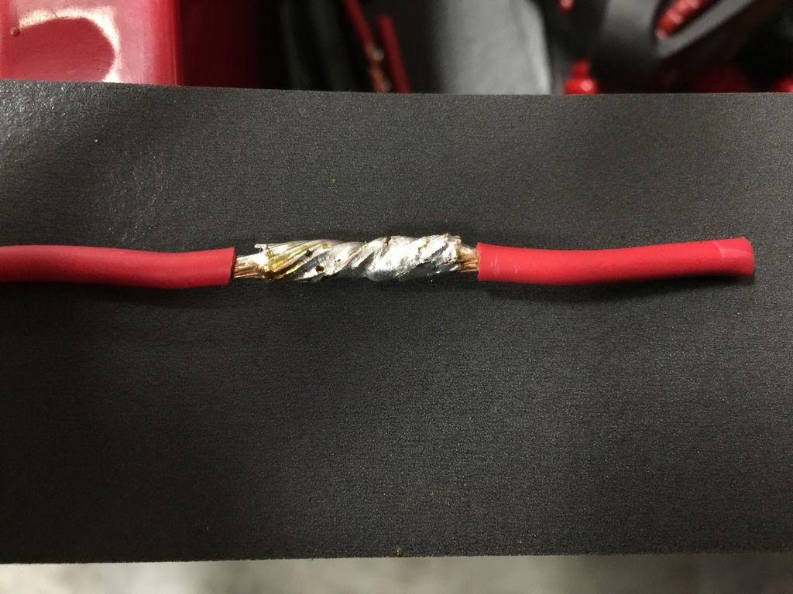
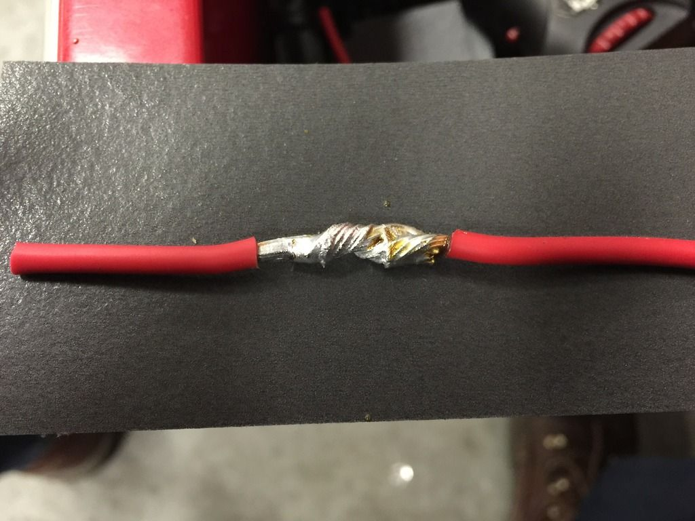
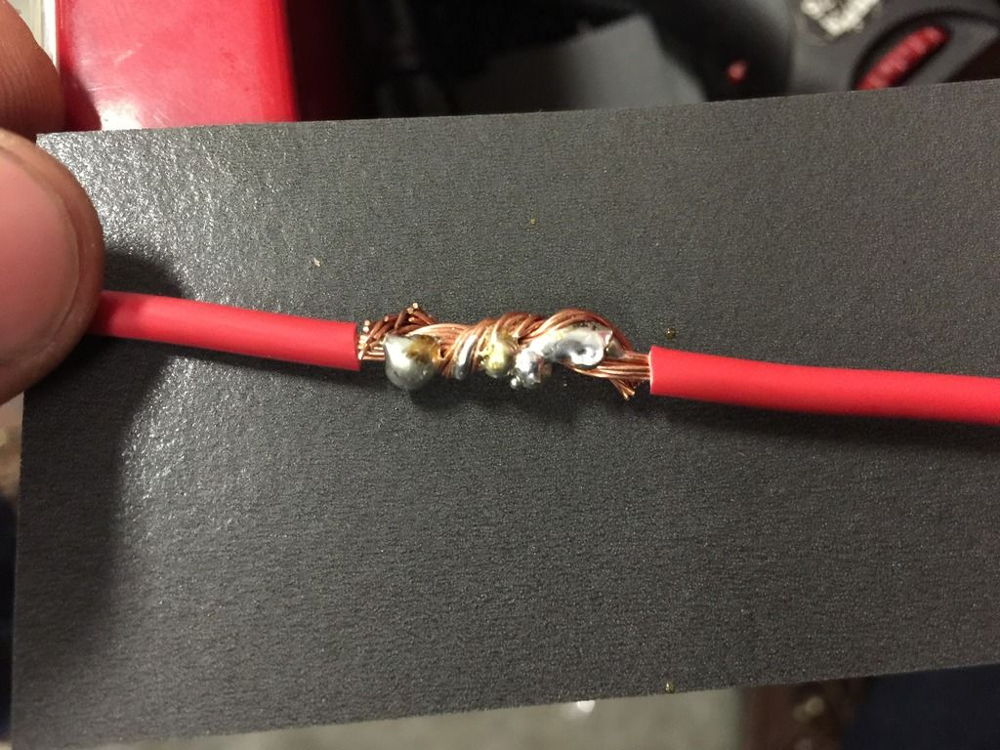
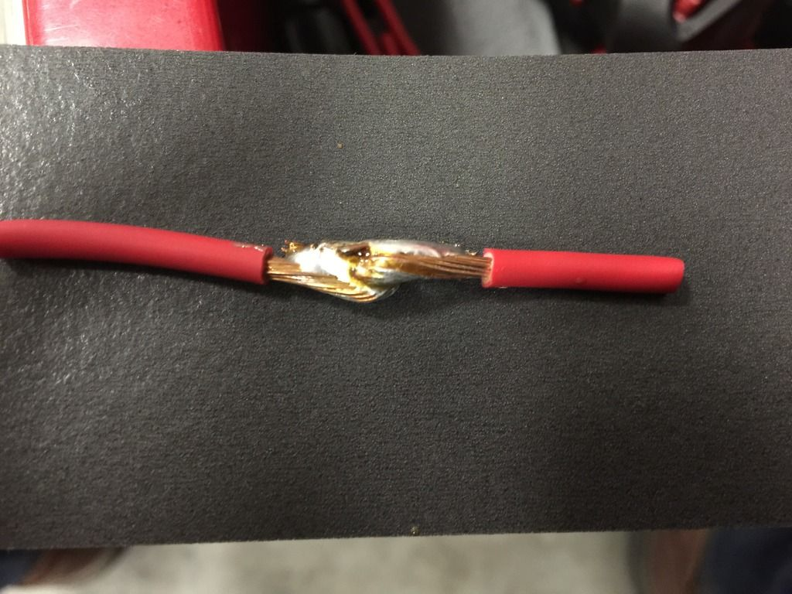
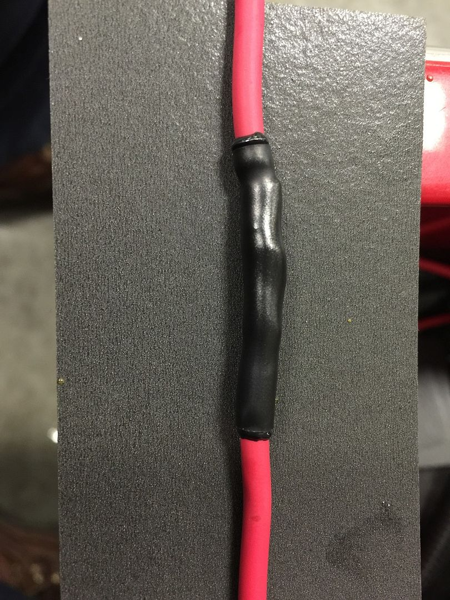
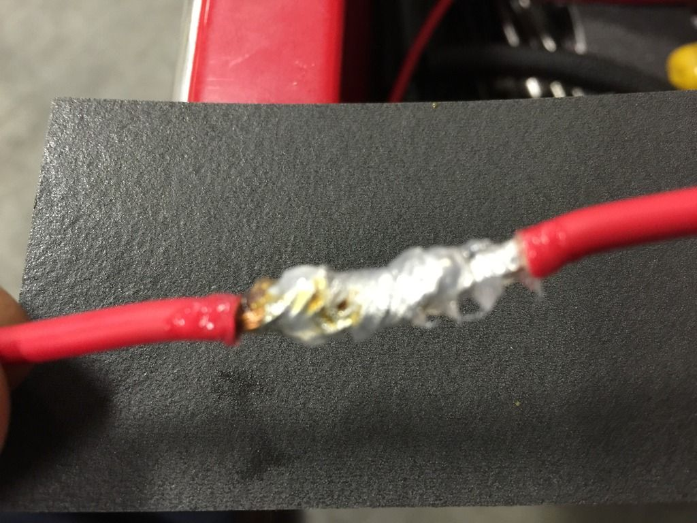
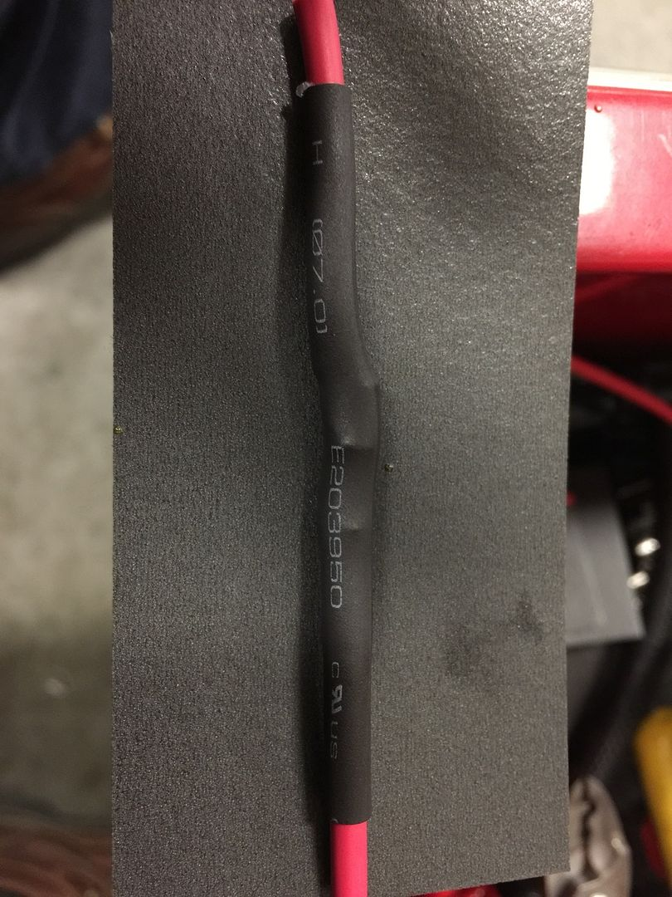
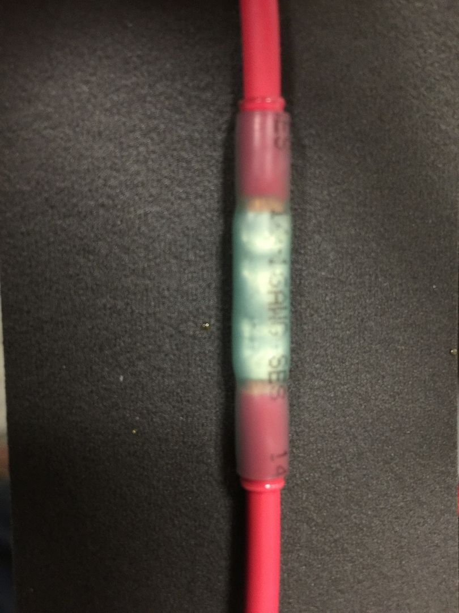
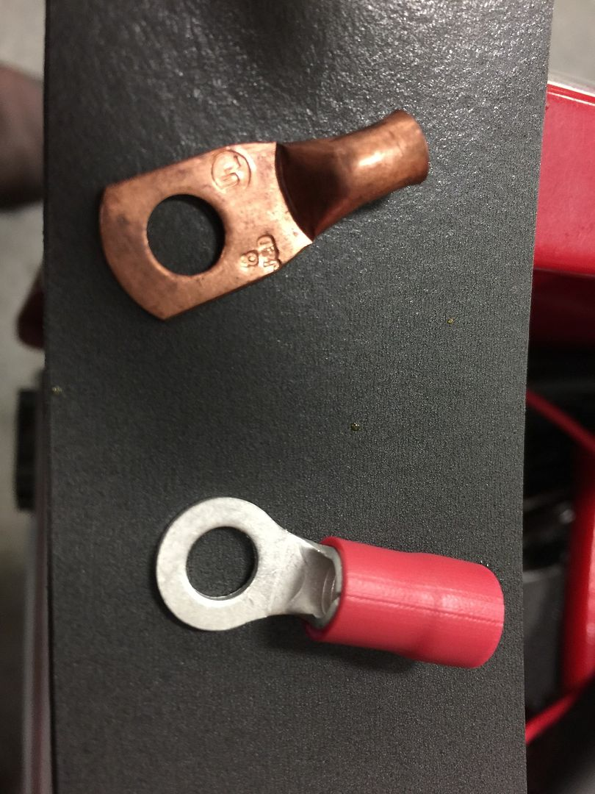
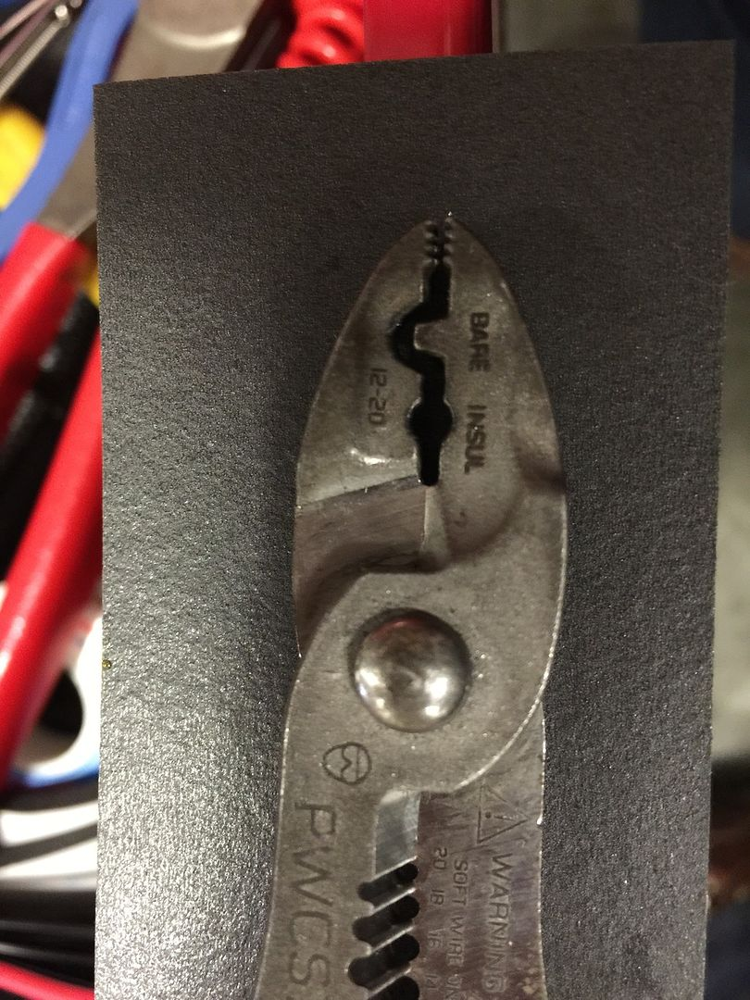

-
I wanted to try and contribute something to the forum so here it goes
This is a basic soldering and wire connections walk thru
1. Disconnect your battery
This is for your safety and so you do not damage any thing. After all I don't think any of us are certified in 12 volt wielding
2. Inspect the wire you want to repair
If there is any corrosion or the wire does not look like fresh shiny copper cut it back until it does. If you do not start with clean corrosion free wire you are just asking for trouble and future headaches.
3. Be prepared
Have all your tools and what ever you need ready soldering is a meticulous task so there is no need to make it worse
4. Repair time
Now that we are ready now to perform the repair slip your heat shrink down one of the wires once you solder them you can't put it on. Now you can strip your wire casing back and connect the 2 pieces together. There are a couple ways you can put them together you can twist them like a bread tie, make both ends into j hooks and then squeeze them down , or mesh the wire together which I never have luck with because the strands usually bunch up and make a mess. What ever way you choose is irrelevant as long as the solder joint is good. Now get out your soldering iron and heat the wire from underneath. Do not heat the wire from the top. Now take your solder and push down on the wire lightly. What you are doing here is helping the heat transfer thru the iron to the wire. When the wire gets hot enough the solder will begin to melt. The solder should wick through the wire strands and encase all the exposed copper. When you have heated the wire and solder properly you can not over apply the solder as any excess will drop right off so do not be scared. Do not melt the solder on the iron to speed the process this will produce what is called a cold solder and will have high resistance be weak and essentially will be worthless.
Now that you have solders the wire let it cool this should not take long and inspect your repair. The solder should cover all of the exposed wire and be evenly dispersed. Note if you have your wire heated properly like instructed above you can apply the solder all in one spot and it will disperse itself throughout the wire. With that said if you are having trouble with the solder flowing chances are that you don't have enough heat in the wire. So now that you have a good looking solder joint with enough solder in it to properly conduct electricity you need to check the strength of the joint. Always pull test your joint and be fairly aggressive with this because it is easier to fix it now than later.
After inspection has passed you need to seal your solder joint the best way to do this is with heat shrink. There are 2 types of heat shrink. One is just that heat shrink and the other is self sealing heat shrink that has glue inside. Both of these are sufficient but If you do not have self sealing you need to apply a small amount of dielectric tune up grease to the solder to protect it before using the heat shrink. Then heat up the heat shrink until it has shrunk down and tightly wrapped around the wire.
Now I have a couple pics to show what all we have gone over


These two solder joints are what you want to look for you can see how the solder looks like it melted into the wire and has encased all of the exposed copper

This is a cold solder you can see how it looks like it is just sitting on the wire and has not been absorbed by the wire the 2 main causes of this not enough heat in the wire and or dirty/corroded wire

This solder joint form the other side looks perfect but upon closer inspection you can see that there was not enough solder melted into the wire. This is whi you need to closely inspect your work because this looks good from the top but there could be a potential for high resistance in this joint because of the lack of solder

This repair has been covered with self sealing heat shrink and it was properly heated until the glue melted out on both ends producing a water tight seal. But If you look at the one end of the heat shrink it barely overlaps the end of the solder joint and can potentially become a weak spot in the seal. Always use enough heat shrink it is not worth skimping on it then having to deal with corrosion later down the road.

It is hard to see in this pic but you just need to apply a light/thin coat of dielectric tune up grease to the joint if you do not have self sealing heat shrink this is to promote a good seal and fight corrosion

Here is what it looks like when you have enough heat shrink extending out past the solder joint. Notice this is not self sealing so there is a light amount of dielectric grease under the tubing to act as the sealant
Now on to but splices ring terminals and the like

Here there are there connectors and what I am showing them for is to help with identification of what ones have built in heat shrink and what ones do not
The top but splice is the only one here with built in heat shrink. So after making your connection please use the heat shrink (I can not even begin to tell you how many connectors I have seen with built in heat shrink and the person never took the time to heat it)
The bottom two are not heat shrinkable the easiest way to tell is that heat shrink is flexible and the others are hard plastic

This is a proper but splice note how rhe wire is not over stripped and you can not see excess copper then the heat shrink was thoroughly heated until the glue melted out. But not melted to the point of being burned.

Here we have two ring terminals both are good but if you have a choice always go for one that has the end sealed like the copper one. They are easier to seal and much less likely to have corrosion problems

And for my last pic make shure you use the right kind of crimp for the job
You will see where the crimped says bare or insulated. This refers to the connector do not use the bare crimp for a but splice with built in heat shrink you will pierce the heat shrink and make it useless
I hope this helps thanks for reading -
Stickied.
As someone who does this as part of their job, and has seen countless examples
of cold solder jobs i cannot this enough.
this enough.
Flux is your friend!Last edited by Z_Karma; 02-05-2019, 03:32 PM.
84 AE/Shiro #683/Shiro #820/84 Turbo -
Thanks for taking the time to do that. -
I hope this helps some people this forum has helped me out a lot and I wanted to try and give something back
Yes I forgot to mention flux the solder I use has flux in it so I guess I took that for granted -
I am setup with this company through my work. They have all sorts of neat and useful things, from terminal strips, to adhesive lined heat shrink, to LED's, and relays…
http://www.nteinc.com/Damn dirty angels....these cars!
Current Daily Driver - 86 Turbo.
Under the cover - THE BANANA… that needs to be re-energized.
sigpic

Copyright © 2006–. All rights reserved. Privacy Policy